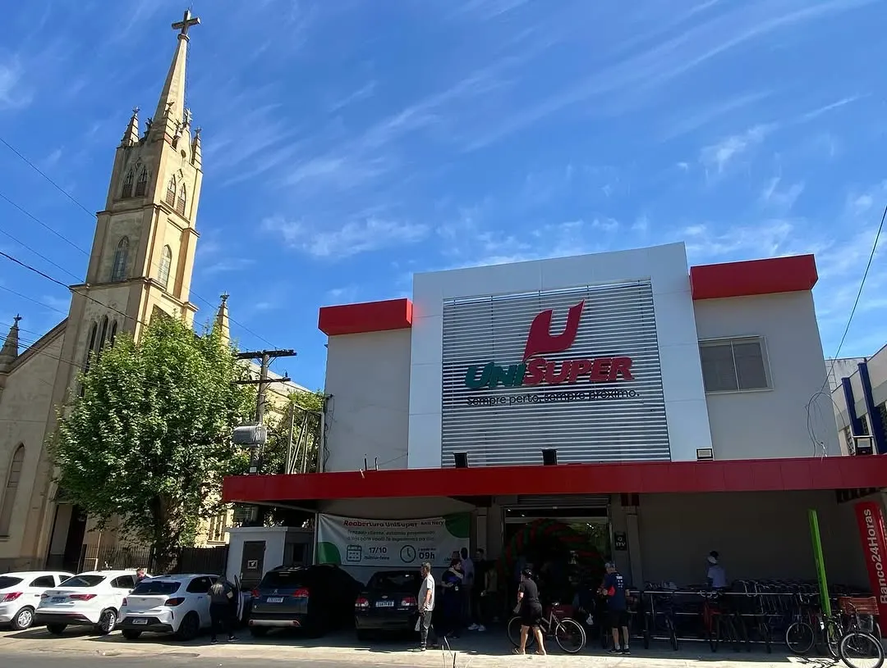
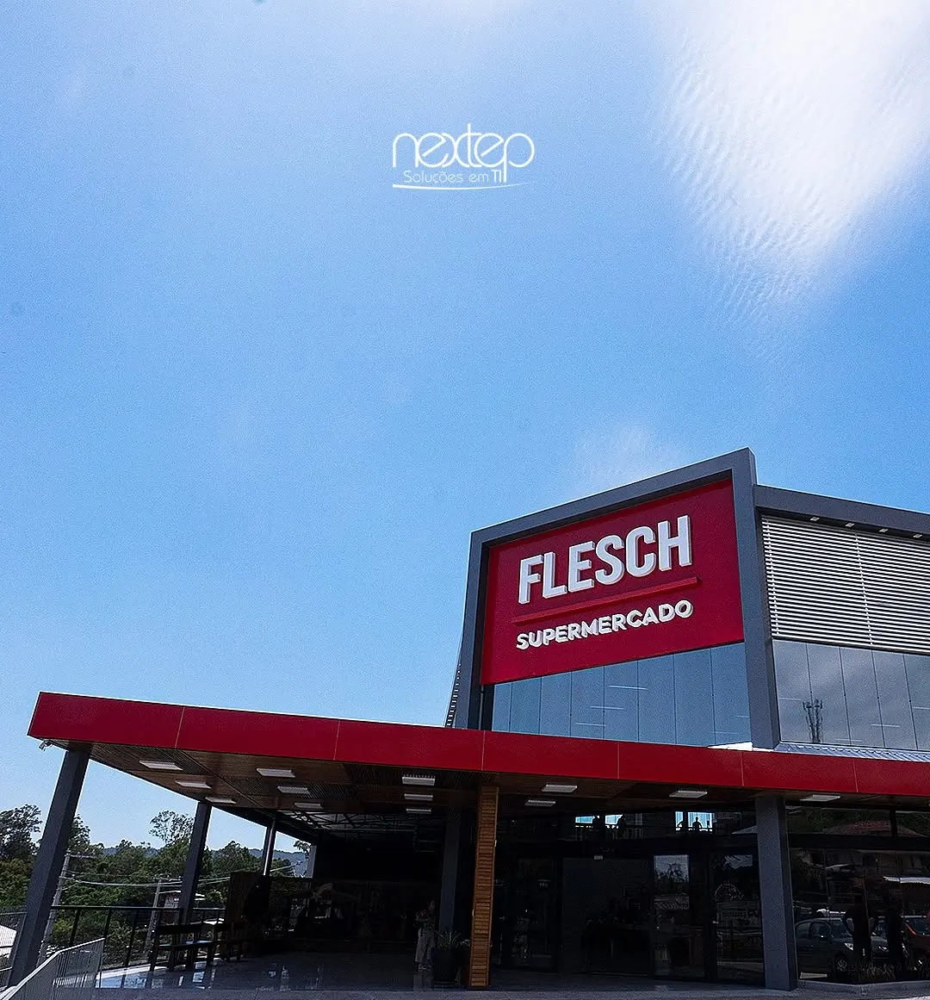
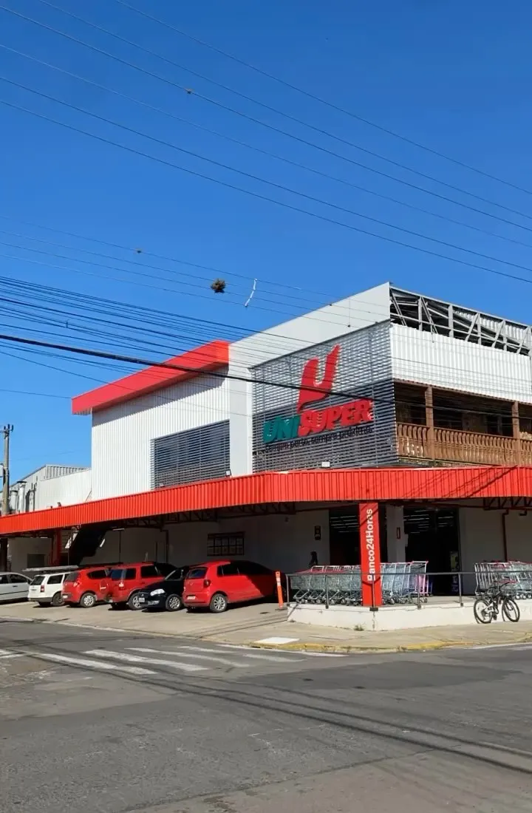
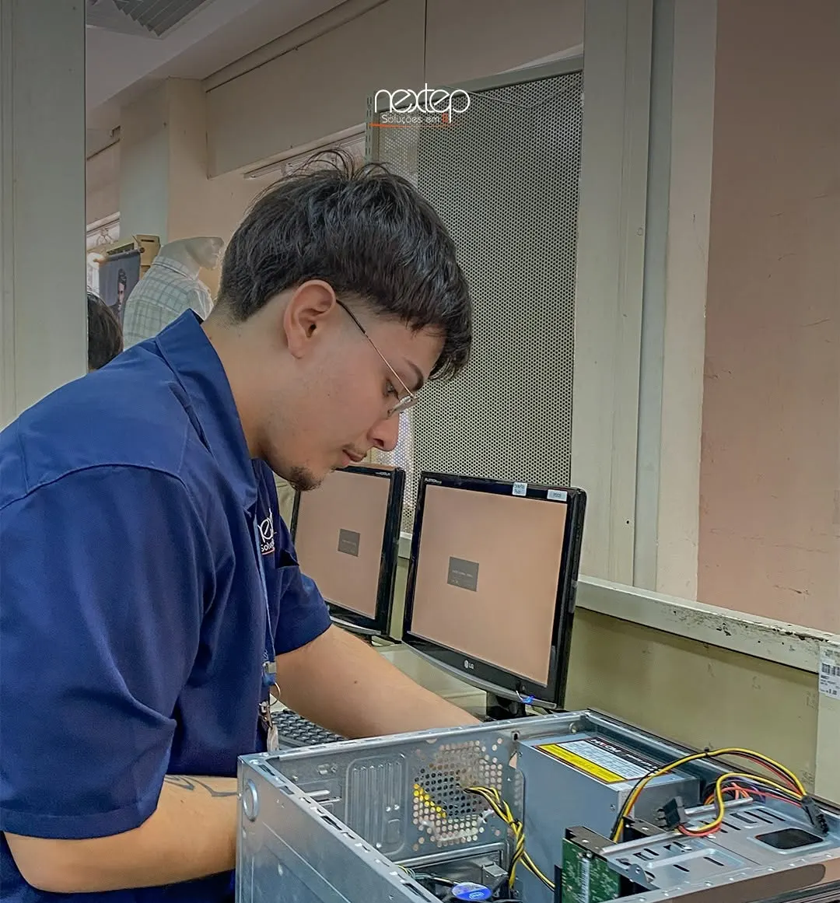
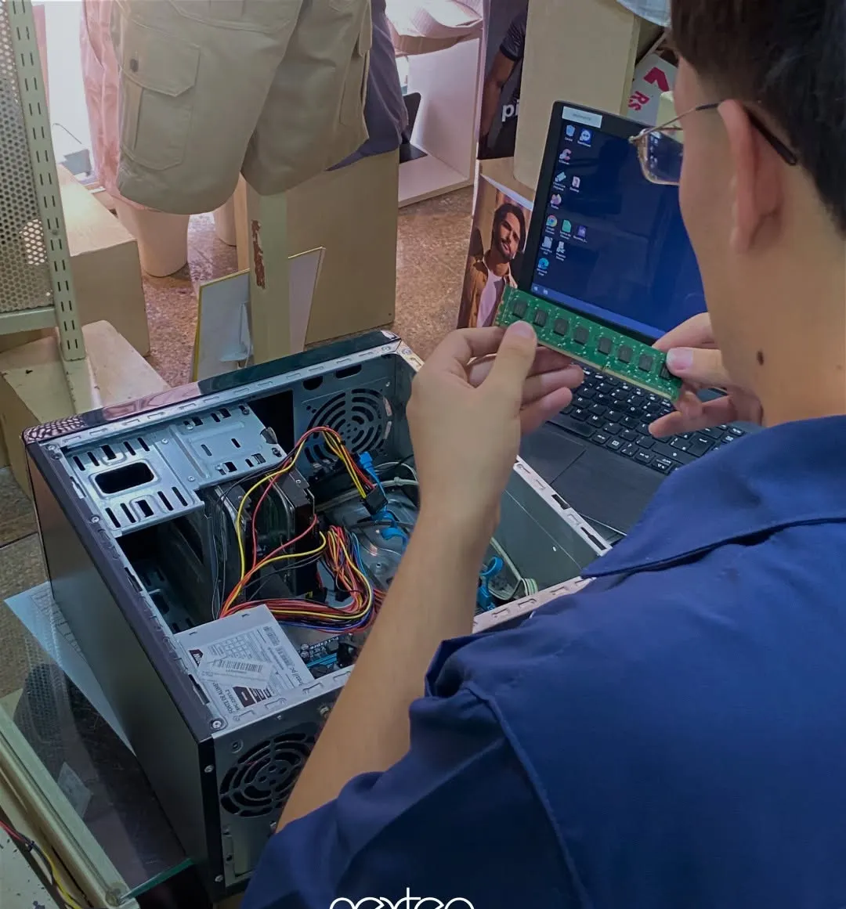
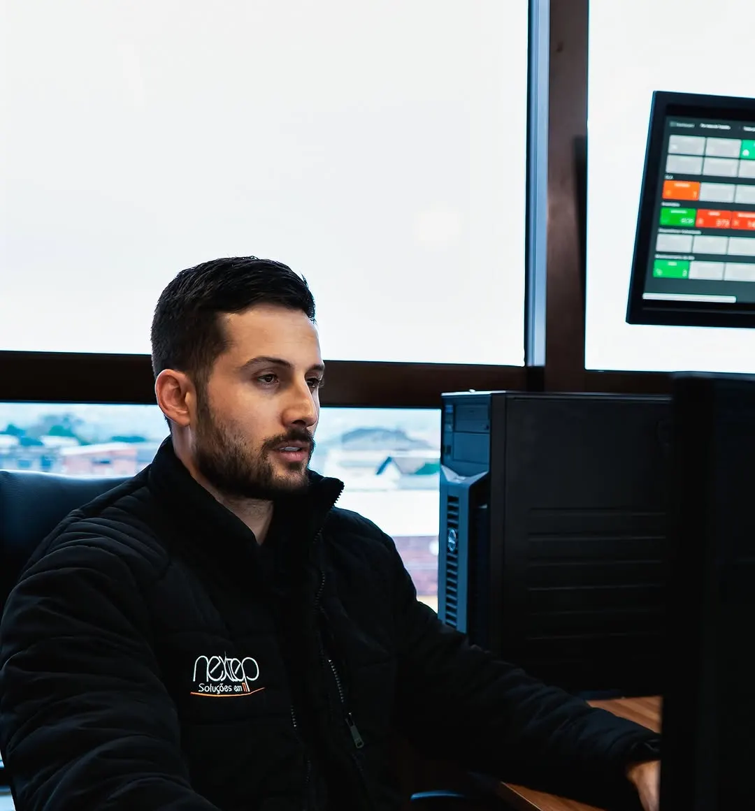

Quinze anos fazendo o que ninguém vê.
Redes, servidores, cloud, segurança e suporte que não deixam nenhuma empresa parar. E, por trás disso, um time que se reúne toda semana para que a tecnologia chegue bem até o cliente.


No começo, éramos dois.
Uma sala pequena, uma pilha de CDs e um rack cheio de cabo para organizar. A Nextep nasceu em 11 de novembro de 2011, quando ficou claro que pequenas e médias empresas dependiam cada vez mais de tecnologia e não tinham quem cuidasse dela direito.
A proposta era ser parceira de infraestrutura de TI, não só um fornecedor que aparece quando algo quebra. Consultoria, administração e mapeamento das necessidades para alinhar o ambiente de tecnologia ao negócio, e deixar o cliente cuidar só do que importa para ele.
Quinze anos depois, a mesma ideia sustenta um time inteiro.
De uma sala para quatro estados
Mais de 100 mil chamados atendidos, mais de 5.000 dispositivos gerenciados e centenas de projetos entregues. Nada disso existiria sem as pessoas: o time, os clientes e os parceiros que confiam na Nextep todos os dias.
Fundação
Duas pessoas, uma sala pequena em Porto Alegre e os primeiros clientes de pequeno e médio porte.
De suporte a parceira de TI
A Nextep passa a assumir a TI inteira dos clientes: gestão, redes, servidores e segurança.
Especialista em supermercados
Com a Sintonia Fina, a Nextep entra em inaugurações, reformas e mudanças de lojas.
15 anos
Sede da Juntapel inaugurada, mais de 5.000 dispositivos gerenciados e clientes em 4 estados.

Toda semana, a liderança senta na mesma mesa.
Projetos, prioridades, clientes e pessoas. É ali que revisamos o que foi feito, ajustamos o que precisa melhorar e saímos com a semana organizada. Tecnologia é o que entregamos. Alinhamento é o que garante que ela chegue bem até o cliente.
- Atendimento rápido de verdade, medido por SLA
- Padrão técnico em cada ponto, cabo e rack
- Segurança da informação como ponto de partida
- Parceria de longo prazo, não serviço avulso
Parte da Sintonia Fina
A Nextep integra a Sintonia Fina, grupo com mais de 30 empresas especialistas que trabalham juntas em projetos de varejo. Cada especialidade cuida da sua parte, e todas falam a mesma língua desde o primeiro dia de obra.
Foi dentro desse grupo que nasceu a parceria com a Montele Engenharia e, dela, o projeto da nova sede da Juntapel.




O time
Técnicos, analistas, consultores e gestores. Gente que atende o telefone, sobe no forro e organiza o rack.
Quer trabalhar com a gente? Siga no LinkedIn






